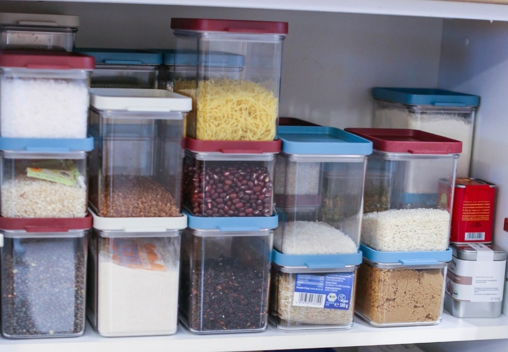

Когда вы начинаете больше готовить, неизменно обрастаете продуктами: пачками круп, специями и так далее. Очень важно правильно все это хранить, потому что когда у вас на кухне беспорядок, трудно что-то найти, могут нарушаться все процессы, и в результате вместо того, чтобы готовить в удовольствие, вы нервничаете, занимаетесь поисками, что-то падает, просыпается, вываливается из шкафчиков и так далее, вызывая у вас стресс.
Еще один важный момент — всякая живность, которая так и норовит завестись в ваших крупах или специях. Мне не понаслышке знакома эта напасть, я постоянно сама борюсь с пищевой молью. Проблема в том, что насекомые заводятся на самом деле даже не у нас дома (хотя, попав на нашу кухню, начинают активно размножаться), личинки той же моли содержатся в некоторых покупных продуктах. Причем даже в качественных — я, например, все крупы покупаю в магазинах био-продуктов, но периодически в пачке риса могу обнаружить червячков или моль. Как с этим бороться? Есть разные методы, но все они отличаются лишь переменным успехом. У меня рабочих методов два: первый — регулярно инспектировать банки, а второй — правильно хранить продукты. Так, например, я рекомендую все крупы держать в герметично закрывающихся емкостях, а не в открытых пакетах и пачках, потому что, даже если в какой-то из них и появится моль, она не сможет вылететь и заразить остальные крупы. Также нужно иметь в виду, что моль заражает не все продукты подряд, а особенно любит орехи и семена (кунжут), некоторые специи (не острые), сухофрукты, пшеничную муку и многие альтернативные виды муки, рис, реже — другие крупы, типа пшена или овсяных хлопьев.
Итак, для эффективного хранения очень важна правильная посуда. Да, я знаю все про экологию и пластик, но пока не нашла для себя ничего удобнее пластиковых емкостей. Пластиковые контейнеры легкие, просто моются, кроме того, они разработаны так, чтобы было удобно ставить их один на другой, а для тех, у кого небольшая кухня, как у меня, экономия места принципиальна. Живя в Москве, я пользовалась контейнерами Tupperware, которые вставлялись один в другой. Сейчас я пользуюсь контейнерами голландский фирмы Mepal, и в принципе всегда стараюсь обзаводиться пусть и пластиковыми емкостями, но очень качественными, как минимум BPA Free (без бисфенола А), хотя в случае с хранением это и не столь важно, потому что пластик не греется. Тем не менее, это очень удобные контейнеры, которые отлично устанавливаются один на другой. Разумеется, существуют и другие бренды качественных емкостей для хранения, подберите тот, который доступен вам, и обязательно приобретите контейнеры разного объема, чтобы хранить продукты, заполняя их полностью, а не частично, для экономии пространства. Кстати, в контейнер я кладу часть упаковки, на которой написано, что это за продукт. Поверьте, через 2 месяца вы не будете помнить рисовая это мука или овсяная. Специи я храню в специальных металлических банках, которые также удобно ставить друг на друга. Мой любимый бренд специй — немецкий SPICEBAR, они фасуются в эргономичные металлические баночки, которые удобно хранить. Мне нравится, что у этого бренда можно покупать пустые металлические баночки с наклейками, чтобы ссыпать туда специи, купленные у других производителей.
Чтобы уберечь особо любимые пищевой молью продукты от заражения, я храню некоторые из них в холодильнике, например, сушеные белые грибы и кедровые орешки. Недавно у меня был крайне неприятный опыт с сушеным барбарисом: я купила его в хорошем гурмэ-магазине с запасом, впрок, и когда готовила на Мотин день рождения плов, открыла контейнер, перепугав при этом детей своими страшными криками, — такого количество червяков я не видела никогда в жизни! И вся эта гадость завелась в плотно закрытой упаковке. Поэтому теперь я покупаю небольшие пакетики с барбарисом и сразу убираю в холодильник. Кстати, я заметила, что моль не слишком жалует чистые специи, гораздо больше ей нравятся разные смеси. Недавно я нашла похожий неприятный сюрприз в пакетике со смесью специй, который привезла из Франции, и, скорее всего, содержимое так полюбилось моли потому, что в состав входили кусочки миндаля. Что делать, если все-таки вы обнаружили в своих продуктах нежелательную живность? Речь идет не только о моли, но и о мелких жучках (недавно я таких обнаружила в тайском рисе: при замачивании на поверхность всплыли насекомые, похожие на крошечных тараканчиков). Мой ответ: выбрасывать без жалости. Хотя я допускаю, что насекомые и продукты их жизнедеятельности сами по себе не ядовиты и не нанесут особого вреда здоровью, тем не менее, есть то, в чем была такая живность, мне лично совсем не хочется.
Как уберечься от насекомых? Есть много рекомендованных народных способов типа зубчиков чеснока или даже каштанов, которые якобы отпугивают насекомых, но, честно говоря, я все это пробовала и не почувствовала эффекта. Единственное, что реально помогает, это клейкие пластины с нанесенным на поверхность гормоном, привлекающим моль, к которым она приклеивается. Я креплю их во всех шкафчиках, где у меня хранятся продукты. Полностью защитить от моли и они не способны, но, по крайней мере, заметно снижают риск заражения. От других насекомых эти ловушки не помогают.
И еще один важный совет: не покупайте с запасом. Да, у меня самой, как у активно готовящего кулинара, на кухне много чего хранится, но я стараюсь минимизировать риск заражения продуктов и не покупаю их впрок, если нет возможности хранить их в холоде. И прежде чем положить в корзинку в магазине новую пачку риса, я вспоминаю, израсходовала ли полностью предыдущую. Потому что мне очень жалко выбрасывать испорченные продукты. Думаю, так же, как и вам. Хранение овощей Раз уж зашла речь о хранении продуктов, давайте поговорим о том, как правильно хранить овощи. Этот вопрос часто задают, потому что овощи при неверном хранении действительно достаточно быстро портятся.
И сначала речь пойдет о вашем холодильнике. К сожалению, не у всех есть хороший холодильник, по разным причинам — вы можете снимать квартиру или обитать в каком-то временном жилье. Хорошо это знаю по своему опыту: когда мы переехали в Германию, первое время снимали квартиру, в которой был маленький старый холодильник, в котором у меня очень быстро портились овощи. Именно из-за его размера: чем меньше у вас ящик для овощей — а в современных холодильниках всегда есть такой ящик, обычно он располагается в нижней части холодильной камеры, над морозилкой, — тем меньше овощей одновременно вы там сможете хранить. Слишком плотно заполненный ящик — нехорошо, потому что при скученности нет правильной циркуляции воздуха, овощи выделяют влагу, мокнут и начинают плесневеть и портиться. Так что, если вы все-таки живете в своей квартире или доме, и, возможно, задумывались о приобретении современного большого холодильника, я рекомендую вам инвестировать в первую очередь именно в него. В свою новую квартиру я купила уже хороший новый холодильник Siemens в рассрочку, причем на 10 см шире стандартного. Он необыкновенно вместительный, и овощи сразу стали храниться совсем иначе, буквально на недели дольше. То есть, в долгосрочной перспективе эта трата себя полностью окупает. Чего овощи особенно «боятся», так это плотно закрытых полиэтиленовых пакетов. В них они буквально задыхаются. Так что, если все-таки приходится хранить, хотя бы временно, в полиэтилене, приоткрывайте пакет для циркуляции воздуха. В Германии в магазинах и на рынках уже давно перешли на бумажные пакеты, более экологичные и дышащие. Еще один совет: если у вас достаточно большой ящик для овощей, можно поместить внутрь невысокие вместительные пластиковые контейнеры и раскладывать овощи в них по категориям, чтобы было проще их искать.
Конечно, минимум раз в две недели ящик нужно инспектировать, выбрасывать то, что засохло или испортилось, отмывать и высушивать, прежде чем поместить овощи обратно.
Есть овощи, которые в холодильнике не хранят. Это картофель, лук, чеснок и помидоры. Для картофеля можно использовать любую емкость с хорошей вентиляцией, стоящую в темном месте, так как на свету клубни зеленеют. Лук и чеснок удобно хранить в плетеной натуральной корзине или другой, так же хорошо вентилируемой, емкости, не на прямом свету, так как на солнце овощи могут быстро начать прорастать. Помидоры храните в любом удобном месте, перевернув стороной, которой они крепились к плодоножке, вниз, и временами проверяйте, потому что они могут незаметно начать портиться. Поэтому помидоры лучше покупать не впрок, а лишь на пару дней.